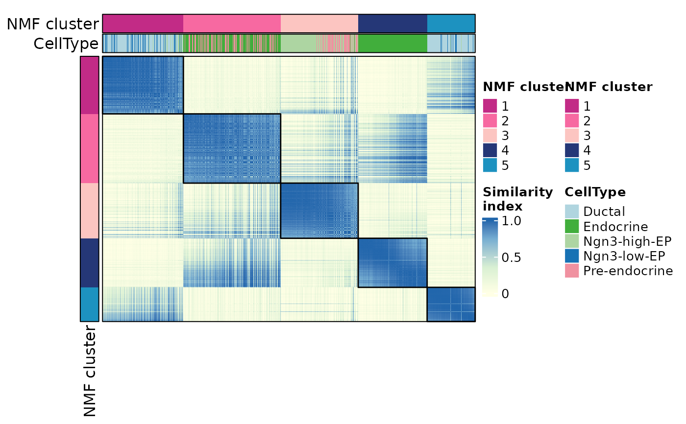
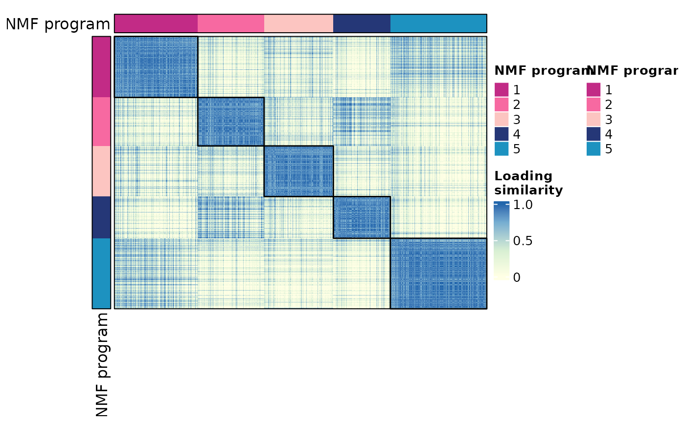

NMF similarity heatmap
Usage
NMFHeatmap(
srt,
plot_type = c("cells", "features"),
reduction = "nmf",
dims = NULL,
cells = NULL,
features = NULL,
similarity_metric = "cosine",
cell_annotation = NULL,
feature_annotation = NULL,
assay = NULL,
border = TRUE,
heatmap_border = NULL,
cell_annotation_border = NULL,
feature_annotation_border = NULL,
heatmap_border_palcolor = "black",
cell_annotation_border_palcolor = "black",
feature_annotation_border_palcolor = "black",
heatmap_border_size = 1,
cell_annotation_border_size = 1,
feature_annotation_border_size = 1,
show_row_names = FALSE,
show_column_names = FALSE,
row_names_side = "left",
column_names_side = "top",
row_names_rot = 0,
column_names_rot = 90,
row_title = NULL,
column_title = NULL,
anno_terms = FALSE,
anno_keys = FALSE,
anno_features = FALSE,
terms_width = grid::unit(4, "in"),
terms_fontsize = 8,
terms_stat = "none",
terms_stat_digits = 2,
terms_stat_test = TRUE,
keys_width = grid::unit(2, "in"),
keys_fontsize = c(6, 10),
features_width = grid::unit(2, "in"),
features_fontsize = c(6, 10),
IDtype = "symbol",
species = "Homo_sapiens",
db_update = FALSE,
db_version = "latest",
db_combine = FALSE,
convert_species = FALSE,
Ensembl_version = NULL,
mirror = NULL,
db = "GO_BP",
TERM2GENE = NULL,
TERM2NAME = NULL,
minGSSize = 10,
maxGSSize = 500,
GO_simplify = FALSE,
GO_simplify_cutoff = "p.adjust < 0.05",
simplify_method = "Wang",
simplify_similarityCutoff = 0.7,
pvalueCutoff = NULL,
padjustCutoff = 0.05,
topTerm = 5,
show_termid = FALSE,
topWord = 20,
words_excluded = NULL,
heatmap_palette = "simspec",
heatmap_palcolor = c("#ffffe5", "#d9f0d3", "#74add1", "#2166ac"),
heatmap_limits = NULL,
cluster_palette = "simspec",
cluster_palcolor = NULL,
cell_annotation_palette = "Chinese",
cell_annotation_palcolor = NULL,
feature_annotation_palette = "Dark2",
feature_annotation_palcolor = NULL,
use_raster = NULL,
raster_device = "png",
raster_by_magick = FALSE,
height = NULL,
width = NULL,
units = "inch",
cores = 1,
seed = 11,
legend.position = "right",
ht_params = list(),
verbose = TRUE
)Arguments
- srt
A Seurat object containing an NMF dimensional reduction.
- plot_type
Plot type.
"cells"plots cell/spot similarity from NMF embeddings."features"plots feature similarity from NMF loadings.- reduction
Name of the NMF reduction. Default is
"nmf".- dims
Dimensions/components from the NMF reduction to use. If
NULL, all available dimensions are used.- cells
Cells/spots to include when
plot_type = "cells".- features
Features to include when
plot_type = "features". IfNULL, variable features shared with the loading matrix are used; if none are found, all features in the loading matrix are used.- similarity_metric
Similarity metric.
- cell_annotation
Metadata columns to show as column annotations in cell mode.
- feature_annotation
Feature metadata columns to show as column annotations in feature mode.
- assay
Which assay to use. If
NULL, the default assay of the Seurat object will be used. When the object also containsChromatinAssay, the default assay and additionalChromatinAssaywill be preprocessed sequentially.- border
Whether to add borders to the heatmap body and annotations. Kept for backward compatibility. The more specific
heatmap_border,cell_annotation_border, andfeature_annotation_borderarguments inherit from this value when left asNULL.- heatmap_border, cell_annotation_border, feature_annotation_border
Whether to draw borders for the heatmap body, cell annotations, and feature annotations, respectively. Defaults inherit from
border.- heatmap_border_palcolor, cell_annotation_border_palcolor, feature_annotation_border_palcolor
Border colors for the heatmap body, cell annotations, and feature annotations when their matching border argument is
TRUE. Default is"black".- heatmap_border_size, cell_annotation_border_size, feature_annotation_border_size
Border line widths for the heatmap body, cell annotations, and feature annotations when their matching border argument is
TRUE. Default is1.- show_row_names
Whether to show row names in the heatmap. Default is
FALSE.- show_column_names
Whether to show column names in the heatmap. Default is
FALSE.- row_names_side
A character vector specifying the side to place row names.
- column_names_side
A character vector specifying the side to place column names.
- row_names_rot
The rotation angle for row names. Default is
0.- column_names_rot
The rotation angle for column names. Default is
90.- row_title
A character vector specifying the title for rows. Default is
NULL.- column_title
A character vector specifying the title for columns. Default is
NULL.- anno_terms
Whether to include term annotations. Default is
FALSE.- anno_keys
Whether to include key annotations. Default is
FALSE.- anno_features
Whether to include feature annotations. Default is
FALSE.- terms_width
A unit specifying the width of term annotations. Default is
unit(4, "in").- terms_fontsize
A numeric vector specifying the font size(s) for term annotations. Default is
8.- terms_stat
Which enrichment statistic to show after each term. Use
"none"to hide the bar background,"score"for-log10of the active p-value metric, or any column from the enrichment result such as"p.adjust","pvalue","qvalue","GeneRatio","RichFactor","FoldEnrichment","zScore", or"Count".- terms_stat_digits
Number of significant digits for numeric term statistics.
- terms_stat_test
Logical. Whether to show the numeric term statistic value at the right side of each term when
terms_statis enabled.- keys_width
A unit specifying the width of key annotations. Default is
unit(2, "in").- keys_fontsize
A two-length numeric vector specifying the minimum and maximum font size(s) for key annotations. Default is
c(6, 10).- features_width
A unit specifying the width of feature annotations. Default is
unit(2, "in").- features_fontsize
A two-length numeric vector specifying the minimum and maximum font size(s) for feature annotations. Default is
c(6, 10).- IDtype
A character vector specifying the type of IDs for features. Default is
"symbol".- species
A character vector specifying the species for features. Default is
"Homo_sapiens".- db_update
Whether the gene annotation databases should be forcefully updated. If set to FALSE, the function will attempt to load the cached databases instead. Default is
FALSE.- db_version
A character vector specifying the version of the gene annotation databases to be retrieved. Default is
"latest".- db_combine
Whether to use a combined database. Default is
FALSE.- convert_species
Whether to use a species-converted database when the annotation is missing for the specified species. Default is
TRUE.- Ensembl_version
An integer specifying the Ensembl version. Default is
NULL. IfNULL, the latest version will be used.- mirror
A character vector specifying the mirror for the Ensembl database. Default is
NULL.- db
A character vector specifying the database to use. Default is
"GO_BP".- TERM2GENE
A data.frame specifying the TERM2GENE mapping for the database. Default is
NULL.- TERM2NAME
A data.frame specifying the TERM2NAME mapping for the database. Default is
NULL.- minGSSize
An integer specifying the minimum gene set size for the database. Default is
10.- maxGSSize
An integer specifying the maximum gene set size for the database. Default is
500.- GO_simplify
Whether to simplify gene ontology terms. Default is
FALSE.- GO_simplify_cutoff
A character vector specifying the cutoff for GO simplification. Default is
"p.adjust < 0.05".- simplify_method
A character vector specifying the method for GO simplification. Default is
"Wang".- simplify_similarityCutoff
The similarity cutoff for GO simplification. Default is
0.7.- pvalueCutoff
A numeric vector specifying the p-value cutoff(s) for significance. Default is
NULL.- padjustCutoff
The adjusted p-value cutoff for significance. Default is
0.05.- topTerm
A number of top terms to include. Default is
5.- show_termid
Whether to show term IDs. Default is
FALSE.- topWord
A number of top words to include. Default is
20.- words_excluded
A character vector specifying the words to exclude. Default is
NULL.- heatmap_palette
A character vector specifying the palette to use for the heatmap. Default is
"RdBu".- heatmap_palcolor
A character vector specifying the heatmap color to use. Default is
NULL.- heatmap_limits
Numeric breaks for the heatmap color scale. If
NULL, defaults toc(0, 0.35, 0.75, 1).- cluster_palette
Palette used for NMF cluster/program annotations.
- cluster_palcolor
Optional custom colors for NMF cluster/program annotations.
- cell_annotation_palette
A character vector specifying the palette to use for cell annotations. The length of the vector should match the number of cell_annotation. Default is
"Chinese".- cell_annotation_palcolor
A list of character vector specifying the cell annotation color(s) to use. The length of the list should match the number of cell_annotation. Default is
NULL.- feature_annotation_palette
A character vector specifying the palette to use for feature annotations. The length of the vector should match the number of feature_annotation. Default is
"Dark2".- feature_annotation_palcolor
A list of character vector specifying the feature annotation color to use. The length of the list should match the number of feature_annotation. Default is
NULL.- use_raster
Whether to use a raster device for plotting. Default is
NULL.- raster_device
A character vector specifying the raster device to use. Default is
"png".- raster_by_magick
Whether to use the 'magick' package for raster. Default is
FALSE.- height
The height of the heatmap in the specified units. If not provided, the height will be automatically determined based on the number of rows in the heatmap and the default unit.
- width
The width of the heatmap in the specified units. If not provided, the width will be automatically determined based on the number of columns in the heatmap and the default unit.
- units
The units to use for the width and height of the heatmap. Default is
"inch", Options are"mm","cm", or"inch".- cores
The number of cores to use for parallelization with foreach::foreach. Default is
1.- seed
Random seed for reproducibility. Default is
11.- legend.position
A character vector specifying the side to place the legends. Options are
"right","left","top", or"bottom". Default is"right". When row names are long and shown on the right side, the gap between the heatmap and the legend is automatically increased to avoid overlap.- ht_params
Additional parameters to customize the appearance of the heatmap. This should be a list with named elements, where the names correspond to parameter names in the ComplexHeatmap::Heatmap function. Any conflicting parameters will override the defaults set by this function. Default is
list().- verbose
Whether to print the message. Default is
TRUE.
Value
A list with the following elements:
plot: The heatmap plot as a patchwork/ggplot object.similarity_matrix: The ordered similarity matrix used for plotting.nmf_cluster: The ordered NMF cluster/program assignment.order: The ordered row/column names.metadata: Ordered cell or feature metadata used for annotations.enrichment: Enrichment results for feature mode when requested, otherwiseNULL.
Examples
library(Matrix)
data(pancreas_sub)
pancreas_sub <- NormalizeData(pancreas_sub)
pancreas_sub <- FindVariableFeatures(
pancreas_sub,
nfeatures = 1000
)
pancreas_sub <- RunNMF(
pancreas_sub,
features = SeuratObject::VariableFeatures(pancreas_sub),
nbes = 5,
maxit = 50
)
#> ℹ [2026-06-29 03:57:53] Running NMF...
#> ℹ BE_ 1
#> ℹ Positive: Spp1, Clu, Krt18, Ttr, Ptma, Rpl12, Sparc, Dbi, Gapdh, Mt1
#> ℹ Cd24a, Mgst1, H19, Pebp1, Myl12a, Gnas, Cldn3, Clps, Sox4, Atp1b1
#> ℹ Vim, Jun, Ambp, Cdkn1c, Mdk, Serpinh1, Eno1, Anxa2, Acot1, Tmsb4x
#> ℹ Negative: Fgf8, Mapk12, Lrrc6, Spock1, Lrrc9, Fam71b, Il1r2, Serpini1, Gng4, Cdca2
#> ℹ Sulf2, Pgf, Dusp26, Ucn3, Entpd3, Gm13373, Megf11, Kctd8, Krtap16-1, Mdm1
#> ℹ Nrp2, Mmel1, Pax6os1, Pabpn1l, Sept3, Hepacam2, Rnf138rt1, Scn9a, Tex36, Syt13
#> ℹ BE_ 2
#> ℹ Positive: Gnas, Pyy, Rbp4, Chgb, Slc25a5, Ttr, Chga, Cpe, Hmgn3, Pcsk1n
#> ℹ Bex2, Isl1, Aplp1, Rap1b, Fam183b, Glud1, Lrpprc, Fev, Slc38a5, Mid1ip1
#> ℹ Ptma, Akr1c19, Clps, Gch1, Sec61b, Tm4sf4, Cck, Map1b, Meis2, 1700086L19Rik
#> ℹ Negative: 1810034E14Rik, 5730507C01Rik, Tmem100, Fam71b, Sycp3, Fscn1, Cdca2, Traip, Gm8113, C2cd4c
#> ℹ Sulf2, Ucn3, Col1a1, Megf11, Bcl2, Gm28875, Ugt2b35, Ugt2b36, A730098A19Rik, Serpinb6b
#> ℹ Eya2, AA986860, Palmd, Vps8, Crybb1, Pabpn1l, Il18, Gjb1, Pdlim1, Hist1h2ae
#> ℹ BE_ 3
#> ℹ Positive: Tmsb4x, Neurog3, Mdk, Cck, Sox4, Ptma, Btg2, Btbd17, Gadd45a, Gnas
#> ℹ Selm, Krt7, Hn1, Cd24a, Rpl12, Cdkn1a, Hes6, Clps, Camk2n1, Slc25a5
#> ℹ Smarcd2, Cldn6, Map1b, Cotl1, Aplp1, Tubb5, Tubb3, Nkx6-1, Pax4, Jun
#> ℹ Negative: Mapk12, Lrrc6, Ccl28, Spock1, Hoxb2, Tmem100, Il1r2, Angptl4, Cdca2, Traip
#> ℹ Slc16a10, Dusp26, Entpd3, Gmfg, Acvr1c, Col27a1, Kctd8, Mdm1, Adora2b, C530044C16Rik
#> ℹ Gm28875, Ugt2b35, Ugt2b36, Fosb, A730098A19Rik, Serpinb6b, Pax6os1, Myo5a, AA986860, Palmd
#> ℹ BE_ 4
#> ℹ Positive: Iapp, Pyy, Nnat, Rbp4, Gnas, Ins2, Ins1, Ttr, Dlk1, Sec61b
#> ℹ Pcsk2, Calr, Hspa5, Pdia6, Ppp1r1a, Tuba1a, Pcsk1n, Sdf2l1, Hsp90b1, Gng12
#> ℹ Chgb, Cpe, Hadh, Ptma, Clps, Mafb, Chga, Scg2, Gapdh, 1700086L19Rik
#> ℹ Negative: Fgf8, Mapk12, Ccl28, Lrrc9, Hoxb2, Tmem100, Sycp3, Serpini1, Lrrn1, Angptl4
#> ℹ Traip, Gm8113, Cmtm3, Pgf, Col1a1, Gm13373, Gmfg, Megf11, Nrp2, Mmel1
#> ℹ Ugt2b35, Ugt2b36, A730098A19Rik, Serpinb6b, Eya2, AA986860, Palmd, Lmo4, Crybb1, Il18
#> ℹ BE_ 5
#> ℹ Positive: Tuba1b, Hmgb2, Tubb5, Ptma, 2810417H13Rik, Ran, H2afz, Ranbp1, H2afx, Tubb4b
#> ℹ Spp1, Birc5, Mif, Cks1b, Gapdh, Slc25a5, H1f0, Rpl12, Mdk, Hn1
#> ℹ Spc24, Cks2, Dut, Hmgb1, Cdk1, Ldha, Anp32b, Snrpd1, Hspe1, Tpi1
#> ℹ Negative: Lrrc6, Ccl28, 1810034E14Rik, Spock1, Tmem100, Fam71b, Sycp3, Kiss1r, Il1r2, Gng4
#> ℹ Prodh2, Lingo1, Angptl4, Gm8113, C2cd4c, Dpysl3, Ucn3, Entpd3, Col1a1, Rem2
#> ℹ Acvr1c, Kctd8, Nrp2, Mmel1, Gm28875, Serpinb6b, Camk2n1, Pax6os1, Nrsn1, Tyrobp
#> ✔ [2026-06-29 03:57:58] NMF compute completed
ht_cells <- NMFHeatmap(
pancreas_sub,
plot_type = "cells",
cell_annotation = "CellType"
)
#> ℹ [2026-06-29 03:57:58] `NMFHeatmap()` input: 1000 cells x 5 NMF dimensions. Computing a 1000 x 1000 similarity matrix (~0.01 GiB dense numeric matrix).
#> ℹ [2026-06-29 03:57:58] Ordering `NMFHeatmap()` rows and columns ...
#> ℹ [2026-06-29 03:57:58] Building ComplexHeatmap object for `NMFHeatmap()` ...
#> ℹ [2026-06-29 03:57:58] Calculating `NMFHeatmap()` render size ...
#> ℹ [2026-06-29 03:57:58] Drawing `NMFHeatmap()`; this can take time for large similarity matrices ...
#> ℹ [2026-06-29 03:57:59] Assembling `NMFHeatmap()` plot object ...
ht_cells$plot

ht_features <- NMFHeatmap(
pancreas_sub,
plot_type = "features"
)
#> ℹ [2026-06-29 03:57:59] `NMFHeatmap()` input: 1000 features x 5 NMF dimensions. Computing a 1000 x 1000 similarity matrix (~0.01 GiB dense numeric matrix).
#> ℹ [2026-06-29 03:58:00] Ordering `NMFHeatmap()` rows and columns ...
#> ℹ [2026-06-29 03:58:00] Building ComplexHeatmap object for `NMFHeatmap()` ...
#> ℹ [2026-06-29 03:58:00] Calculating `NMFHeatmap()` render size ...
#> ℹ [2026-06-29 03:58:00] Drawing `NMFHeatmap()`; this can take time for large similarity matrices ...
#> ℹ [2026-06-29 03:58:01] Assembling `NMFHeatmap()` plot object ...
ht_features$plot
